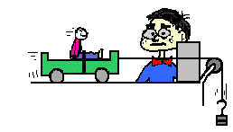

the variety of ways by which motion can be described (words, graphs, diagrams, numbers, etc.) was discussed. In this unit (Newton's Laws of Motion), the ways in which motion can be explained will be discussed. Isaac Newton (a 17th century scientist) put forth a variety of laws that explain why objects move (or don't move) as they do. These three laws have become known as Newton's three laws of motion. The focus of Lesson 1 is Newton's first law of motion - sometimes referred to as the law of inertia.
Newton's first law of motion is often stated as:
An object at rest stays at rest and an object in motion stays in motion with the same speed and in the same direction unless acted upon by an unbalanced force.
Two Clauses and a Condition
There are two clauses or parts to this statement - one that predicts the behavior of stationary objects and the other that predicts the behavior of moving objects. The two parts are summarized in the following diagram.
The behavior of all objects can be described by saying that objects tend to "keep on doing what they're doing" (unless acted upon by an unbalanced force). If at rest, they will continue in this same state of rest. If in motion with an eastward velocity of 5 m/s, they will continue in this same state of motion (5 m/s, East). If in motion with a leftward velocity of 2 m/s, they will continue in this same state of motion (2 m/s, left). The state of motion of an object is maintained as long as the object is not acted upon by an unbalanced force. All objects resist changes in their state of motion - they tend to "keep on doing what they're doing."
Suppose that you filled a baking dish to the rim with water and walked around an oval track making an attempt to complete a lap in the least amount of time. The water would have a tendency to spill from the container during specific locations on the track. In general the water spilled when:
the container was at rest and you attempted to move it
the container was in motion and you attempted to stop it
the container was moving in one direction and you attempted to change its direction
Everyday Applications of Newton's First Law
There are many applications of Newton's first law of motion. Consider some of your experiences in an automobile. Have you ever observed the behavior of coffee in a coffee cup filled to the rim while starting a car from rest or while bringing a car to rest from a state of motion? Coffee "keeps on doing what it is doing." When you accelerate a car from rest, the road provides an unbalanced force on the spinning wheels to push the car forward; yet the coffee (that was at rest) wants to stay at rest. While the car accelerates forward, the coffee remains in the same position; subsequently, the car accelerates out from under the coffee and the coffee spills in your lap. On the other hand, when braking from a state of motion the coffee continues forward with the same speed and in the same direction, ultimately hitting the windshield or the dash. Coffee in motion stays in motion.

Have you ever experienced inertia (resisting changes in your state of motion) in an automobile while it is braking to a stop? The force of the road on the locked wheels provides the unbalanced force to change the car's state of motion, yet there is no unbalanced force to change your own state of motion. Thus, you continue in motion, sliding along the seat in forward motion. A person in motion stays in motion with the same speed and in the same direction ... unless acted upon by the unbalanced force of a seat belt. Yes! Seat belts are used to provide safety for passengers whose motion is governed by Newton's laws. The seat belt provides the unbalanced force that brings you from a state of motion to a state of rest. Perhaps you could speculate what would occur when no seat belt is used.